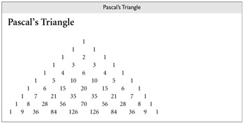

|
|
|
|
13.6 Exercises
|
13.1 |
Does filename "globbing" provide the expressive
power of standard regular expressions? Explain. |
|
13.2 |
Write shell scripts to a.
Replace blanks with underscores in the names of all files
in the current directory. b.
Rename every file in the current directory by prepending
to its name an textual representation of its modification date. c.
Find all eps files in the file hierarchy below the current directory,
and create any corresponding pdf files that are missing or out of date. d.
Print the names of all files in the file hierarchy below
the current directory for which a given predicate evaluates to true. Your
(quoted) predicate should be specified on the command line using the syntax
of the Unix test command, with one or more at signs (@)
standing in for the name of the candidate file. |
|
In Example 13.15
we used "$@" to refer to the parameters passed to ll.
What would happen if we removed the quote marks? (Hint: try this for files
whose names contain spaces!) Read the man page for bash
and learn the difference between $@ and $*.
Create versions of ll that use $* or "$*" instead of "$@".
Explain what's going on. |
|
|
13.4 |
a.
Extend the code in Figure 13.5,
13.6, 13.7, or
13.8 to try to kill processes more gently. You'll want to read the man
page for the standard kill command. Use a TERM signal first. If that doesn't
work, ask the user if you should resort to KILL. b.
Extend your solution to part (a) so that the script
accepts an optional argument specifying the signal to be used. Alternatives
to TERM and KILL include HUP, INT, QUIT, and ABRT. |
|
13.5 |
Write a Perl, Python, or Ruby script that creates a simple
concordance: a sorted list of significant words appearing in an input
document, with a sublist for each that indicates the lines on which the word
occurs, with up to six words of surrounding context. Exclude from your list
all common articles, conjunctions, prepositions, and pronouns. |
|
13.6 |
Write Emacs Lisp scripts to a.
Insert today's date into the current buffer at the
insertion point (current cursor location). b.
Place quote marks (" ")
around the word surrounding the insertion point. c.
Fix end-of-sentence spaces in the current buffer. Use the
following heuristic: if a period, question mark, or exclamation point is
followed by a single space (possibly with closing quote marks, parentheses,
brackets, or braces in-between), then add an extra space, unless the
character preceding the period, question mark, or exclamation point is a
capital letter (in which case we assume it is an abbreviation). d.
Run the contents of the current buffer through your
favorite spell checker, and create a new buffer containing a list of
misspelled words. e.
Delete one misspelled word from the buffer created in (d),
and place the cursor (insertion point) on top of the first occurrence of that
misspelled word in the current buffer. |
|
13.7 |
Explain the circumstances under which it makes sense to
realize an interactive task on the Web as a CGI script, an embedded
server-side script, or a client-side script. For each of these implementation
choices, give three examples of tasks for which it is clearly the preferred
approach. |
|
13.8 |
a.
On the CD Write a web page with embedded PHP to print the
first 10 rows of Pascal's triangle (see Example 16.10 if you don't know what
this is). When rendered, your output should look like Figure 13.23. b.
Modify your page to create a self-posting form that
accepts the number of desired rows in an input field. c.
Rewrite your page in JavaScript.  |
|
13.9 |
Create a fill-in web form that uses a JavaScript
implementation of the Luhn formula (Exercise 4.10) to check for typos in
credit card numbers. (But don't use real credit card numbers; homework
exercises don't tend to be very secure!) |
|
13.10 |
a.
Modify the code of Figure 13.16
(Example 13.35)
so that it replaces the form with its output, as the CGI and PHP versions of Figures 13.12
and 13.15 do. b.
Modify the CGI and PHP scripts of Figures 13.12
and 13.15 (Examples 13.30
and 13.34) so
they appear to append their output to the bottom of the form, as the
JavaScript version of Figure 13.16
does. |
|
Run the following program in Perl: sub foo {
my $lex = $_[0];
sub bar {
print "$lex\n"; }
bar(); } foo(2);
foo(3); You may be surprised by the output. Perl 5 allows named
subroutines to nest, but does not create closures for them properly. Rewrite
the code above to create a reference to an anonymous local subroutine and
verify that it does create closures correctly. Add the line use diagnostics; to the beginning of the original version and run it
again. Based on the explanation this will give you, speculate as to how
nested named subroutines are implemented in Perl 5. |
|
|
13.12 |
Write a program that will map the web pages stored in the
file hierarchy below the current directory. Your output should itself be a
web page, containing the names of all directories and .html files, printed at levels of indentation corresponding to
their level in the file hierarchy. Each .html filename
should be a live link to its file. Use whatever language(s) seem most
appropriate to the task. |
|
13.13 |
In Section 13.4.1
we claimed that nested blocks in Ruby were part of the named scope in which
they appear. Verify this claim by running the following Ruby script and
explaining its output: def foo(x) y
= 2
bar = proc { print x, "\n" y
= 3
} bar.call() print y, "\n" end foo(3) Now comment out the second line (y = 2) and run the script again. Explain what happens. Restate
our claim about scoping more carefully and precisely. |
|
13.14 |
Write a Perl script to translate English measurements (in,
ft, yd, mi) into metric equivalents (cm, m, km). You may want to learn about
the e modifier on regular expressions, which allows the
right-hand side of an s///e expression to contain executable code. |
|
13.15 |
Write a Perl script to find, for each input line, the
longest substring that appears at least twice within the line, without
overlapping. (Warning: This is harder than it sounds. Remember that by
default Perl searches for a left-most longest match.) |
|
13.16 |
Perl provides an alternative (?:…) form of parentheses that supports
grouping in regular expressions without performing capture. Using this
syntax, Example 13.59
could have been written as follows: if (/ˆ([+-]?)((\d+)\.|(\d*)\.(\d+))(?:e([+-]?\d+))?$/) { #
floating-point number print "sign: ", $1,
"\n"; print "integer: ", $3, $4, "\n"; print "fraction:
", $5, "\n"; print "mantissa:
", $2, "\n"; print "exponent: ", $6, "\n";
# not $7 } What purpose does this extra notation serve? Why might the
code here be preferable to that of Example 13.59? |
|
13.17 |
Consider again the sed code of Figure 13.1.
It is tempting to write the first of the compound statements as follows (note
the differences in the three substitution commands): /<[hH][123]>.*<\/[hH][123]>/ { ; # match whole heading
h
; # save copy of pattern space
s/ˆ.*\(<[hH][123]>\)/\1/ ; # delete text before
opening tag
s/\(<\/[hH][123]>\).*$/\1/
; # delete text after closing tag
p ;
# print what remains
g
; # retrieve saved pattern space
s/ˆ.*<\/[hH][123]>// ;
# delete through closing tag b
top Explain why this doesn't work. (Hint: remember the
difference between greedy and minimal matches [Example 13.55].
Sed lacks the latter.) |
|
13.18 |
Consider the following regular expression in Perl: /ˆ(?:((?:ab)+) |a((?:ba)*))$/. Describe, in English, the set of strings it will match.
Show a natural NFA for this set, together with the minimal DFA. Describe the
substrings that should be captured in each matching string. Based on this
example, discuss the practicality of using DFAs to match strings in Perl. |
On the CD 13.19�C13.21 In More Depth.